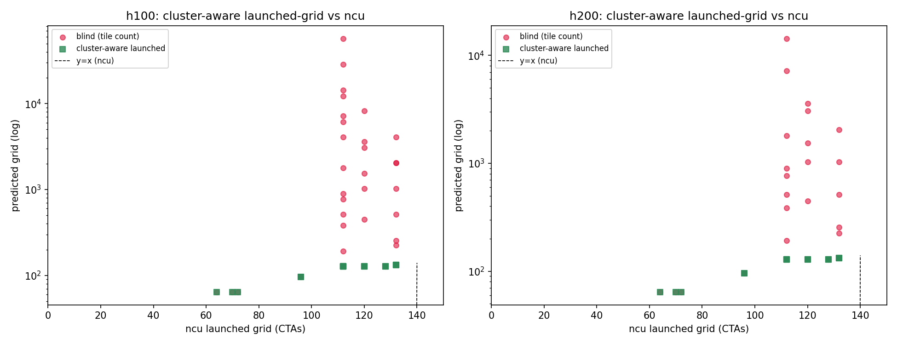
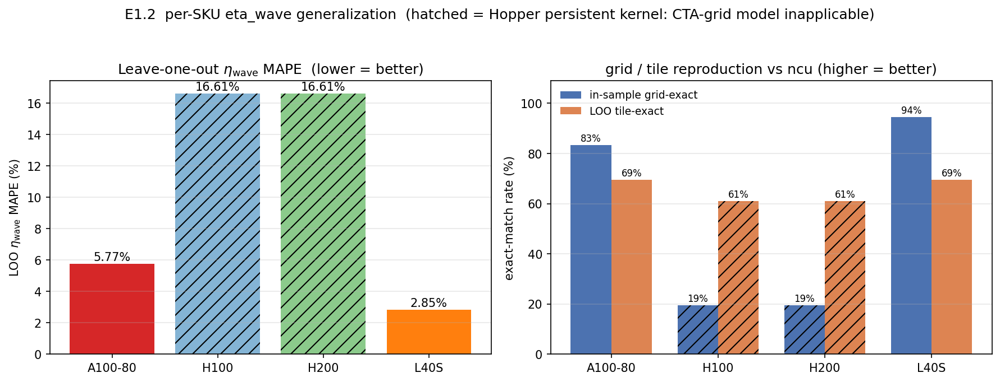
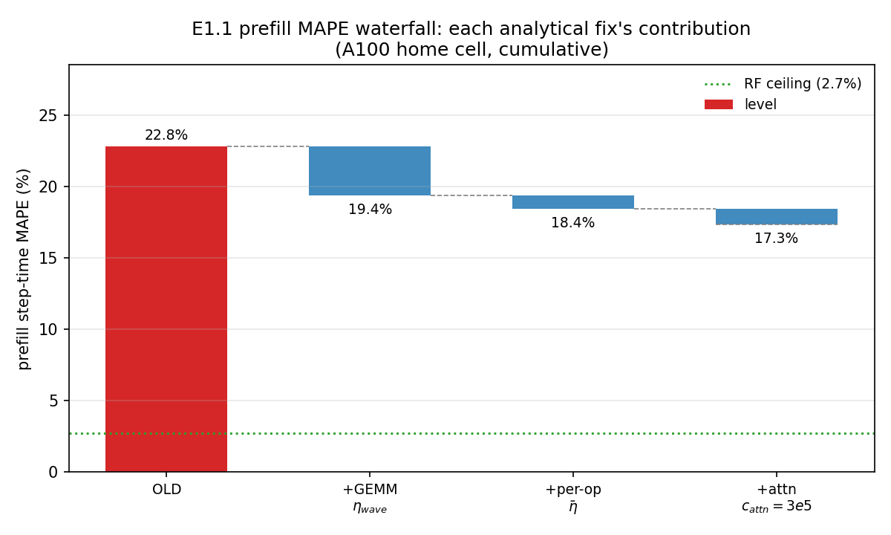
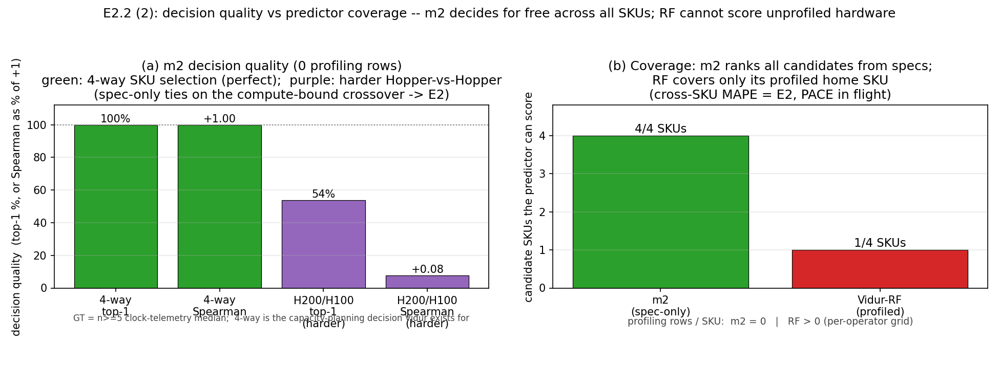
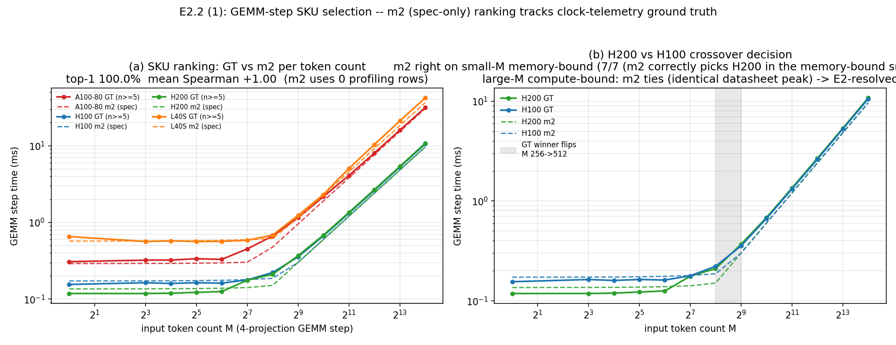

0. Executive summary
Almost every serving decision — which GPU to buy, how to batch, which request to admit — depends on: how long will the next step take? The standard answer is to profile the hardware and fit a table or ML model. It works, but it is slow, must be redone per GPU, and is a black box.
This project asks whether we can answer it almost entirely from input parameters — layer count, hidden size, context length, batch size, GPU specs — with at most one cheap deploy-time reading. Part 1 builds the predictor; Part 2 drops it into four real serving systems.
What is genuinely working
- Decode accuracy is strong. 0.8–3.7% mean error on real ShareGPT traces across four GPUs, with essentially zero model-specific profiling.
- It matches a profiled model with no profiling. Against DistServe's own model (OPT-13B/A100): 1.78% vs their 2.27%.
- It can rank unseen hardware. Perfect 4-GPU ranking from specs alone; the profiled baseline cannot rank a GPU it has not profiled.
What is honestly not yet there
- Prefill is the weak phase (~17–21% error). We have localised it: ~80% of the residual is light kernels + KV-write, not the matrix multiplies.
- On its home GPU, the profiled baseline wins on raw error (5.3% vs 8.4%). Our advantage there is cost and coverage, not accuracy.
- The boldest causal claim is only half-closed. 'Cap lowers clock' is proven; 'and therefore throughput declines' holds on one tight-power card and is flagged as open.
Verdict: the decode predictor is real, accurate, and useful; the utility story is genuine for three of four systems. It is not yet a prefill model, it is not online learning, and two experiments remain before the strongest claims are earned.
1. Problem & context — why predict per-step latency from inputs?
1.1 The setting, in plain terms
A model generates one step at a time. Prefill is the first step (large T, the whole prompt); decode is every later step (T = number of active requests). Decode dominates real serving, so decode accuracy is the figure of merit.
'How long does the next step take?' is constantly needed as a prediction, before the step runs — for admission control, capacity planning, and speculative-decoding control. All are decisions made from a predicted step time.
1.2 How prior work answers it — and where it stops
There is a mature family of roofline predictors: for each kernel compute the arithmetic-limited time (FLOPs ÷ peak TFLOP/s) and the data-movement-limited time (bytes ÷ peak bandwidth), and take the larger. That max(compute, memory) is the bottleneck decision; it needs exactly the two datasheet peaks.
The family is broad: LLM-Viewer (arXiv:2402.16363, canonical), GenZ (arXiv:2406.01698, our calibrated-roofline baseline), LIMINAL (arXiv:2507.14397), LIFE (AMD), LLMCompass (ISCA 2024, 4.1% on A100), Kong's speculative-decoding model — rooted in Hong & Kim (ISCA 2009) and NVIDIA's matrix-multiply guide.
The limitation is uniform: peak is never reached. Every predictor silently multiplies both peaks by an efficiency factor alpha ∈ (0,1) to stop over-predicting. The question is where that factor comes from.
It is endemic: GenZ (measured + extrapolated constant), LIFE (user-supplied input), FlashAttention-3 (a single 0.55 — but real attention efficiency spans 0.066–0.610 on H200, 9.2×), LLMCompass (per-shape mapper), Imai et al. (learned residual called 'cloud variability' — the closest prior art), Frontier (deployment-fit residual), Vidur (RF replaces it). In all of them the efficiency is a constant, a lookup, or a learned residual — never a closed form explained by the architecture.
1.3 The thesis of this project
If the efficiency factor can be written as a closed form in architecture quantities — clock, SM count, cluster size, L2 capacity — the predictor stops needing per-machine profiling, explains its own numbers, and transfers to unseen hardware. Part 1 writes that form; Part 2 tests whether having it changes anything downstream.
2. Part 1 — the predictor
2.1 The non-intrusive idea and the full per-step model
The predictor takes the architecture, request shape, and GPU datasheet, and prices one step as a sum of timed pieces — two of them entering as a max, because GPU and host run concurrently. The shipped code is src/mechanism/predictor.py:
T_step = one step's wall time. T_blocks sums over N_L layers: each pays t_proj (4 projection GEMMs) + t_attn (attention), plus T_light once (RMSNorm×2, residual×2, RoPE, activation, KV-write, lm_head). N_kern·t_launch is the dispatch floor (~394 kernels). S(N) is the serial host residual, exposed by alpha; T_samp is sampling. Each t_proj/t_attn is itself a roofline max(compute, memory).
Inputs (no profiling)
N_L, hidden size, head config · context s_i, batch N · GPU datasheet · one cheap deploy-time clock readt_proj, t_attn
roofline max(compute, memory), closed-form efficienciesT_light
bytes/(η_mem·BW) — crude; dominant prefill errorN_kern·t_launch
dispatch floor via max+ α·S(N) + T_samp
host residual (calibrated once per SKU, frozen) + samplingT_step
predicted per-step latencyNo — the model says so explicitly. Equation 1 has ~6–7 additive terms; the efficiencies multiply out to 9+ factors. The 'three corrections' map onto the five-factor ceiling + memory branch + overlap, but omit attention, the dispatch floor, sampling, and — most consequentially (§2.8) — the light/KV-write bucket.
2.2 The five-factor GEMM ceiling and the H100 989 breakdown
The heart of Part 1 is explaining why a matrix multiply never reaches the datasheet peak. The H100's 989 TFLOP/s is not a measurement — it is an exact product of architecture quantities:
Every term is a place a real kernel falls short: the clock isn't really 1.83 GHz under load; not all 132 SMs are usable per wave; the tensor cores don't issue every cycle. So achievable efficiency is a product of factors, each tied to one shortfall:
- $\fclk$ — sustained clock ÷ boost clock (the frequency factor, §2.3).
- $\etacl$ — fraction of SMs the launch geometry keeps co-resident (§2.4).
- $\etaact$ — fraction of wall-clock an SM has resident work (load imbalance, last-wave tail).
- $\etaduty$ — fraction of active cycles the tensor pipe issues matrix instructions (intra-kernel stalls).
Arithmetically they multiply to exactly (issuing/elapsed) — on one machine the split is an identity. They are kept separate for diagnosis and transfer: they degrade from different causes (A100's lower η_active 0.883 is its uneven 4-wave tail; η_duty falls from pipe stalls regardless). The η_duty ramp gets a one-parameter law (1/(1+c/tiles-per-CTA), c≈0.31 on H100) — consistent with prologue amortisation, not first-principles.
2.3 The frequency factor — clock droop after the power cap
The slogan splits into two sub-claims with opposite verdicts. Sub-claim A — 'never reaches 989 because the clock droops' — is TRUE and quantified (n=5 with CIs, clocktel_ci_summary.json):
| GPU | boost MHz | sustained MHz | droop vs datasheet | throughput peak→max-M |
|---|---|---|---|---|
| H100 | 1980 | 1380 | 30.3% | 0.0% |
| H200 | 1980 | 1455 | 26.5% | +0.6% |
| A100-80 | 1410 | 1125 | 20.2% | 0.0% |
| L40S | 2520 | 1425 | 43.5% | −15.4% |
At large M the geometric factors are already maxed, so f_clk is essentially the entire shortfall. On H100 qkv tops out at ~681 TFLOP/s = 0.69 of spec, almost exactly the clock ratio. With geometry maxed, f_clk IS the gap.
Sub-claim B — 'and therefore GEMM gets slower' — is FALSE on well-provisioned parts (H100/H200/A100 plateau) and TRUE only on tight-power ones (L40S −15.4%). Rising geometry masks the droop unless the cap is tight.

2.4 SM fill and the Hopper cluster cap
Not all 132 stay on, due to launch geometry, not a runtime stall. Hopper cuBLAS launches 16-CTA clusters that must co-reside on one GPC; since 132 isn't a multiple of 16, the grid pins at ~112–128 (η_cluster ≈ 0.85). Our min(total_tiles, floor(N_SM/csize)·csize) model lands within one cluster on 35/36 H100 and 27/28 H200 rows (one miss each: down/M=256).
On Hopper, essentially no: the kernel is persistent, launching ~N_SM CTAs once and iterating tiles internally, so the grid stays pinned at 64–132 across a 512× M sweep (η_wave ≈ 1 by construction). On Ampere/Ada there are no clusters; the residual is a partial last wave instead (A100 11.1%, L40S 9.9% idle).

An honest boundary: since η_wave ≈ 1 by construction on Hopper, Hopper gives zero positive validation of the wave mechanism — it is validated only on A100/L40S (tail law generalises at 2.85% / 5.77% leave-one-out). On the flagship inference GPU this factor degenerates to a near-constant.

2.5 The memory branch — an L2 parameter law
The memory side's factor is L2 reuse: small working sets stay in L2, so achieved bandwidth ramps with working-set size, plateauing toward η_max above a few × L2. The one parameter is x = working_set / L2_capacity, and a saturation law fits (results/l2_reuse_fit.json, 39 cells each on A100-80 and H100):
Yes: the sub-1 bandwidth factor is explained by working-set/L2. The fit now holds across two SKUs (A100-80 5.46%, H100 2.23%), and a single global (η_max, x_half) collapses both at 2.48% MAPE over n=48 cells, corroborated by rising L2 hit-rate. A size-dependent variant cuts a Vidur A100 decode memory-branch error 5.25% → 2.83%.
2.6 The overlap correction α
Host and GPU run concurrently, so the step lies between max(T_cpu,T_gpu) and T_cpu+T_gpu. α is derived (not fitted) from the two-resource bound: the host span splits into a shadowable dispatch part and a serial residual S(N); the exposed fraction is α = max(0, 1 − T_shadow/S(N)). α is built from the GPU/launch models; only S(N) is empirical.
The catch: the shipped code uses α=1 (eager mode, host on critical path); the derived α_overlap is reported only as the async-engine bound. The strongest evidence it is the right structure: an implied-leak ledger over 108 cells ranges −12.7 to +9.9, only 51.9% inside [0,1] — proving a fitted scalar α only reproduces the mean by absorbing signed GPU errors; the bounded derived form refuses to.
2.7 'Online learning' — what S(N) actually is
There is no online learning — drop the phrase. The one empirical term, the host residual S(N), is fit once per GPU by least squares on a synthetic grid (e.g. H100 floor 3.12 ms) and frozen. The defensible framing: S(N) is irreducibly software-dependent (vLLM version, interpreter, host CPU), so it is measured once on a disjoint trace and frozen — not learned online.
2.8 Accuracy now — and exactly where it fails
Decode is strong: 0.8–3.7% on real ShareGPT traces across four GPUs; held-out 1.3% (H200) / 1.4% (A100-80). Against DistServe's own profiled polynomial (OPT-13B/A100, zero OPT profiling): 1.78% vs 2.27% over 2,455 steps — with the A100 PCIe-vs-SXM mismatch working against us, so the win is conservative.
Prefill is the weak point: full-step on A100 (18,601 cells) we get 8.4% vs RF's 1.2% — RF memorises its own table. Split: decode 5.9% (vs 1.0%), prefill 21.1% (vs 2.7%). We localised it: 81% of the prefill residual is the light-ops + KV-write bucket (82% component error), not the GEMMs, which are already ≈1 efficiency on large prefill chunks.


3. Part 2 — the utility
A predictor is only worth building if having it changes a decision. Part 2 drops it into four systems' decision modules and asks: what formula did we replace, and did it help? The theme: home-machine accuracy is not the point — coverage and decision quality are.
3.1 Vidur — losing on MAPE, winning on the decision
On its home GPU the RF wins: A100/Llama-3-8B, 2,945 batches — RF 5.31% vs ours 8.41% (decode 5.59 vs 7.60; prefill 0.88 vs 21.10). We win cost and coverage: 0.001 s + zero profiling rows vs RF's 158 s + 44,000 rows, re-fit per GPU.
The strongest Part-2 result: Vidur exists for capacity planning ('move to an unprofiled H200?'), which the RF cannot answer. Ranking 4 GPUs by GEMM-step time over 13 token counts (ground truth from real n=5 telemetry): ours scores 100% top-1, mean Spearman +1.0, zero profiling; the RF scores 1/4 candidates — no coverage, cannot decide.

The decisive cross-GPU number — exact RF-vs-ours error on an unprofiled SKU — is still missing. The harness is written but transfer_2x2.json does not yet exist; the experiment is staged, not run.

3.2 DistServe — matching a profiled model with no profiling
DistServe's scheduler uses a profiled polynomial to place prefill/decode. We replaced it with our fit-free predictor: on its own OPT-13B/A100, zero OPT profiling, 1.78% vs their 2.27% — matching a model fit on its own data, with no profiling cost, and additionally modelling the 281 mixed steps their polynomial cannot.
3.3 QLM — a much better estimate, an honest null on SLO
QLM's waiting-time estimator is a flat scalar (N×100/700 s) — sequence- and hardware-blind. We replaced it with our predictor integrated over 1 prefill + 100 decode steps. Per-step error falls 111–123% → 0.9–4.4%; native emits one value for all 4 GPUs (real spread 1.484×), ours ranks them exactly (Spearman 1.0).
3.4 Splitwise — a coverage win, not an accuracy claim
Splitwise's simulator prices an iteration via interpolation + a 1.1 fudge. We supplied our predictor so it could model 4-SKU single-GPU configs its tables cannot cover (0/1,260 native rows in scope). Honestly a capability-add — no head-to-head number — so it belongs in the abstract as coverage, not an X-by-Y% gain.
3.5 The per-paper utility table
| System | Formula replaced | Honest improvement (file-cited) | Tag |
|---|---|---|---|
| DistServe | profiled prefill/decode polynomial | 1.78% vs 2.27%, zero profiling; +281 mixed steps | SOLID |
| Vidur | RandomForest predictor | lose MAPE, win cost + decision | MIXED |
| QLM | flat scalar N×100/700 | 111–123% → 0.9–4.4%; SLO null | SOLID/INSUF |
| Splitwise | interp1d + 1.1 fudge | coverage add, no accuracy number | PARTIAL |
The supported cross-paper sentence: DistServe — 1.78% vs 2.27%, zero profiling; QLM — estimate 111–123% → ~4.4% + hardware ranking; Splitwise — covers configs the sim cannot; Vidur — RF more accurate (5.3% vs 8.4%) but we need zero of its 44k rows and win the SKU decision. Must NOT claim: QLM SLO gain, beating Vidur on MAPE, or a Splitwise accuracy gain.
4. Honest status scorecard
| Item | Status | One-line why |
|---|---|---|
| PART 1 — THE PREDICTOR | ||
| LIT-1 roofline deciders | SOLID | family complete, all need both peaks |
| LIT-2 unexplained α | SOLID | multiply-sourced; memory-side α 2-SKU |
| Q-count (not three changes) | SOLID | ~7 terms / 9+ factors |
| Q-freq (never 989) | SOLID | droop w/ CIs; clock is the gap |
| Q-freq (slower GEMM / causal) | PARTIAL | decline only on L40S; chain half-closed |
| Q-smfill (cluster cap) | SOLID | 112/132 cap; persistent kernel |
| Q-twofactors (active⊥duty) | PARTIAL | valid for diagnosis; not reconciled |
| Q-L2 (param-only memory) | PARTIAL | 2-SKU collapse 2.48%; 2/4 SKUs; not wired in |
| Q-overlap (α derived) | SOLID/INSUF | bound derived; nsys unreduced |
| Q-online (online learning?) | SOLID — NO | not online learning |
| Q-acc (decode) | SOLID | single-digit, near profiling-free |
| Q-acc (prefill) | PARTIAL | light/KV-write dominates; E1.1c open |
| PART 2 — THE UTILITY | ||
| Q-vidur-rf (home MAPE) | SOLID | RF wins MAPE, we win cost |
| Q-vidur-rf (cross-GPU) | NOT DONE | E2 in flight |
| Q-vidur-decision (rank SKU) | PARTIAL | real, but Hopper tie at large M |
| Q-qlm (estimate) | SOLID | estimate accuracy large win |
| Q-qlm (SLO attainment) | INSUFFICIENT | null; serial executor |
| Q-abstract (per-paper) | SOLID | honest per-system claims |
5. What comes next
The gaps are specific and few, and are addressed by a separate forthcoming experiment plan, not restated here. In brief it targets: the per-light-kernel timing model (E1.1c) for the prefill residual; extending the 2-SKU L2-law collapse to H200/L40S; the cross-GPU transfer table (E2) for the decisive Vidur number; a contended-regime QLM run with a concurrent executor; the Blackwell n=5 clock sweep; and wiring the five-factor ceiling and L2 law into the actual prediction path. None change the honest verdict — they move the caveated rows to solid.